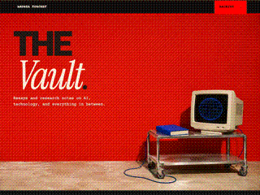
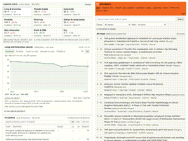
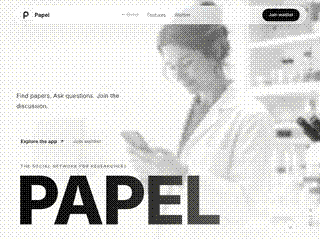
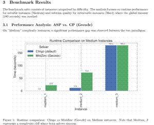
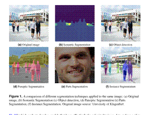
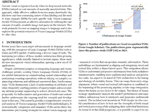
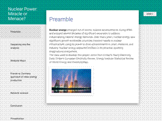
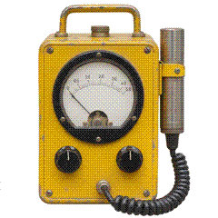
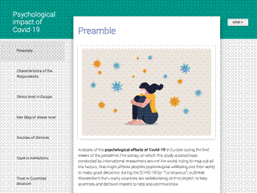
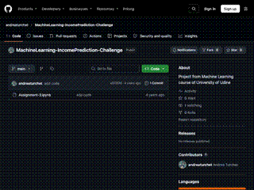

Born in Latisana, Italy 1999 MSc Artificial Intelligence & Cybersecurity PhD student @ Universität Klagenfurt

Welcome in my world
Can artificial intelligence, in the near future, think and act like a human being? Can it make rational choices, feel emotions, and update itself?
Work
-

The Vault — blog
A personal space for technical notes, research reflections, and essays at the intersection of artificial intelligence, technology, art, and society.
-

OncoNews — oncology, in context
OncoNews brings together oncology research, clinical trial results, and regulatory updates alongside interactive cancer statistics from NCI SEER and NORDCAN, keeping original sources, biomarkers, and historical evidence in context.
-

Papel — the social network for researchers
Papel is an AI-assisted social network concept for academic reading and researcher interaction. The project explores on-device summarization, quiz generation, and privacy-preserving paper discovery, with the product architecture centered on local inference rather than server-side processing of reading behavior.
-
ART STORE
c:/art-store
Generative and crypto art, mostly red, living on a Windows 98 desktop.
Research & study
-

Automated reasoning
This project studies the "Seats in Room" problem as a declarative optimization task, where students must be partitioned into groups and assigned to seats under social, spatial, and relaxable constraints. I modeled the problem with Answer Set Programming using Clingo and Constraint Programming using MiniZinc/Gecode.
-

Few-shot semantic segmentation
This project investigates few-shot semantic segmentation for industrial visual inspection, focusing on semiconductor wafer defect images where labeled masks are scarce and domain expertise is costly. I experimented with SegGPT through Hugging Face and compared the approach with SAM2 prompting.
-

Computer vision — a survey of VLMs
This survey analyzes the rapid development of Vision-Language Models after CLIP, focusing on how contrastive pretraining, multimodal representation learning, captioning objectives, and generative vision-language architectures changed the design space of computer vision systems.
-

Advanced data science
This data science project studies the role of nuclear energy in electricity production using public energy datasets from Ember, the Energy Institute Statistical Review of World Energy, and ElectricityMap.
-

Bachelor degree research thesis
During my Erasmus period in Spain, I developed a research thesis on predicting reactivity pulse values for a TRIGA nuclear reactor with neural-network models.
-

Data science
This project analyzes the psychological effects of the COVID-19 pandemic during a specific lockdown period through a statistical data-science workflow. The project was evaluated with the highest grade, 30 cum laude.
-

Machine learning
In a university machine-learning competition, my team addressed income prediction as a supervised classification task. The final system achieved 0.87 accuracy and ranked first in the competition.
-
Studies in the robotic field
In an autonomous robotics course during Erasmus, my team developed "Development of a Robot for Hazardous Environment Tasks" as the final project, with Python implementations of Kalman filters, particle filters and PID controllers.
Bio
Born in Latisana, Italy in 1999, currently enrolled in a MSc double degree (Austrian-Italian) in Artificial Intelligence and Cybersecurity.
My connection with technology began in 2013 when I started to understand how an android operating system works, therefore I started to create my own custom roms using as base the source codes of some popular aftermarket firmwares. In that time I met many people who contributed to the growth of my skills, @gokulbalram was my first guru and he deserves a special thanks. Like everything on this earth, this chapter of my life also came to an end, in 2017, after completing my latest job: an AOSP Porting for the ASUS Zenfone 2, powered by an Intel CPU.
With the beginning of my university career, I deepened data science, generative and crypto art, blockchain and ethics related to technology. I like to work in dynamic, social environments where my creativity is encouraged. I believe that great goals can be achieved by reaching out to others, sharing your vision and valuing their input.